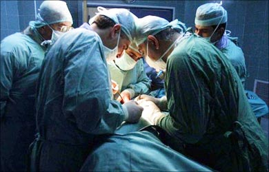

Post-Moterm
examination

Pathologists perform post-mortem examinations in a respectful manner and with regard for the feelings of the bereaved relatives. An autopsy (also known as a post-mortem examination or necropsy) is the examination of the body of a dead person and is performed primarily to determine the cause of death, to identify or characterize the extent of disease states that the person may have had, or to determine whether a particular medical or surgical treatment has been effective. Autopsies are performed by pathologists, medical doctors who have received specialty training in the diagnosis of diseases by the examination of body fluids and tissues.
After all studies are completed, a detailed report is prepared that describes the autopsy procedure and microscopic findings, gives a list of medical diagnoses, and a summary of the case. The report emphasizes the relationship or correlation between clinical findings (the doctor’s examination, laboratory tests, radiology findings, etc.) and pathologic findings (those made from the autopsy).